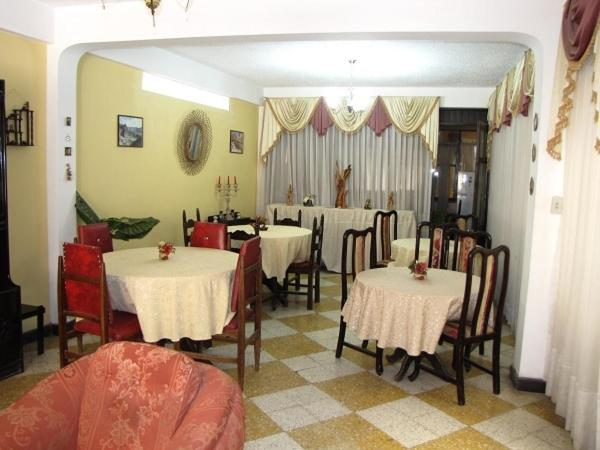
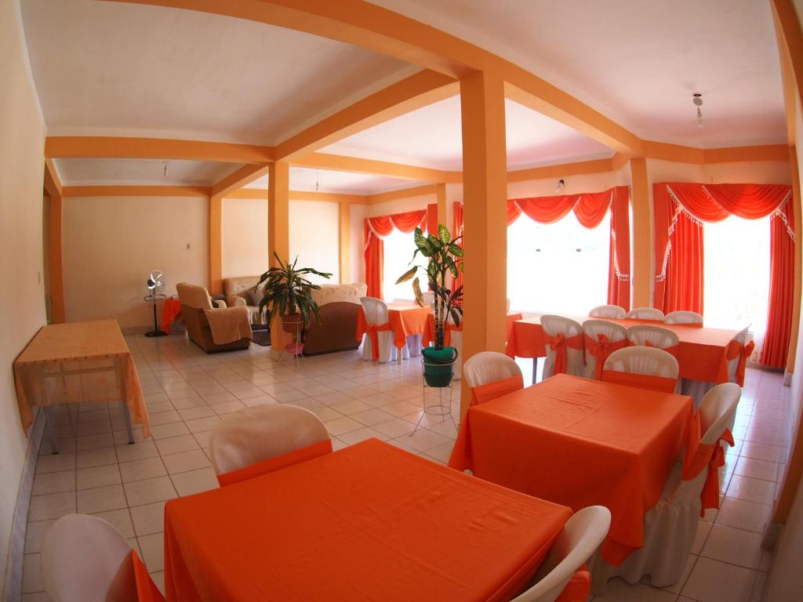
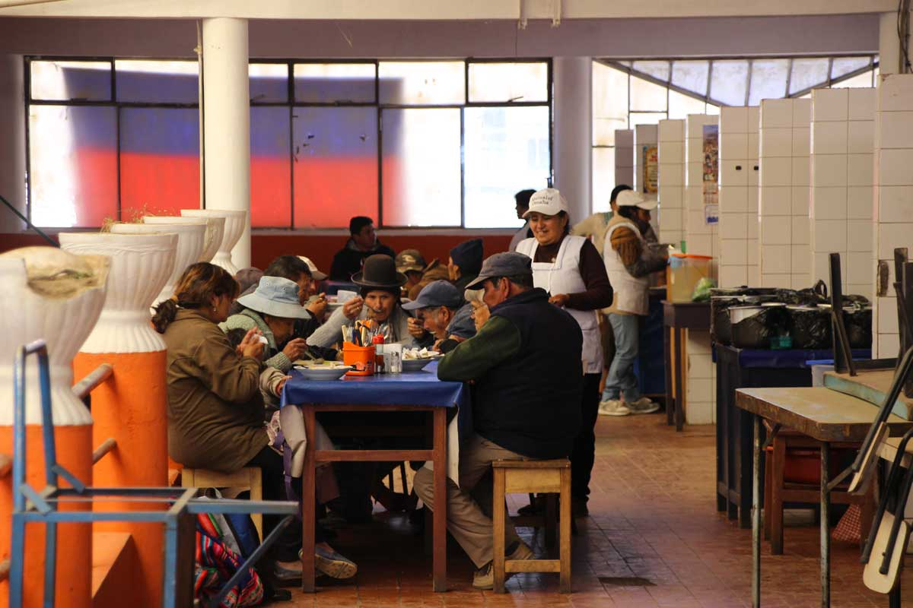
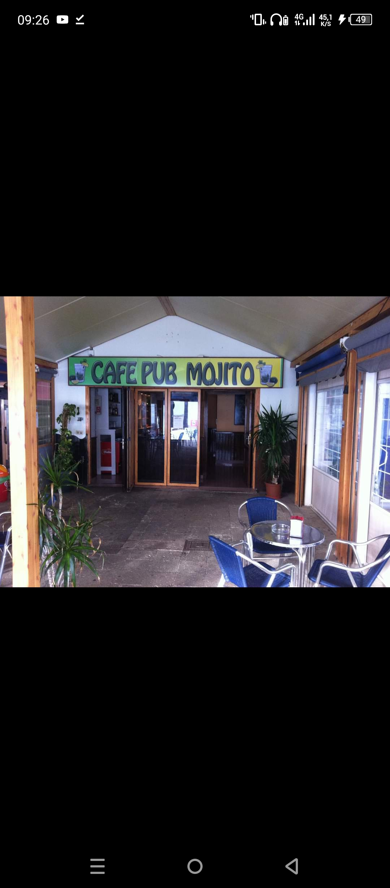
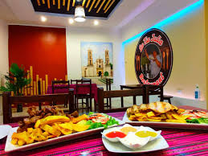

Restaurantes Recomendados
RESTAURANT LA TORRE
Especialidades: Platos tradicionales como charquecán, sopa de maní, pique macho, y pollo al horno. También ofrecen empanadas y opciones vegetarianas. Se destaca por su cocina típica boliviana con un enfoque en productos locales.
Ubicación: Calle Avaroa esquina Calle Florida, Tupiza.
Comentario: Es popular entre turistas por su atención y ambiente acogedor, además de su menú variado.

Hostal Butch Cassidy
Especialidades: Conocido por su fritanga, chanfaina y calapurca. También sirven platos internacionales, pero su cocina local es la preferida.
Ubicación: Avenida Chichas N°220, Tupiza.
Comentario: Un lugar con mucha historia, ya que el nombre del hostal está inspirado en los famosos bandidos estadounidenses. Su restaurante es frecuentado tanto por turistas como por locales.

COMEDOR POPULAR MERCADO CENTRAL
Especialidades: Platos típicos y económicos como el charquecán, ají de fideo, sopa de maní, y empanadas. Los desayunos también son populares, con tamales y humintas.
Ubicación: Dentro del Mercado Central de Tupiza, en el corazón de la ciudad.
Comentario: Una opción muy económica y auténtica para disfrutar de la gastronomía local. Es ideal para experimentar la vida cotidiana de Tupiza.

CAFE PUB MOJITO
Especialidades: Aunque más orientado al público joven, sirve platos tradicionales como sopa de maní, locro y ensaladas con ingredientes frescos locales. También ofrecen cócteles y bebidas típicas.
Ubicación: Calle Suipacha, cerca del centro de Tupiza.
Comentario: Es un lugar moderno, perfecto para quienes quieren disfrutar de comida tradicional en un ambiente más relajado, con música y un toque contemporáneo.

TIA JULIA
En el restaurante Tia Julia de Tupiza es comun encontrar una variedad de platos tipicos de la gastronomia de tupiza como ser el charque de llama, saice, sopa de mani, humintas.
